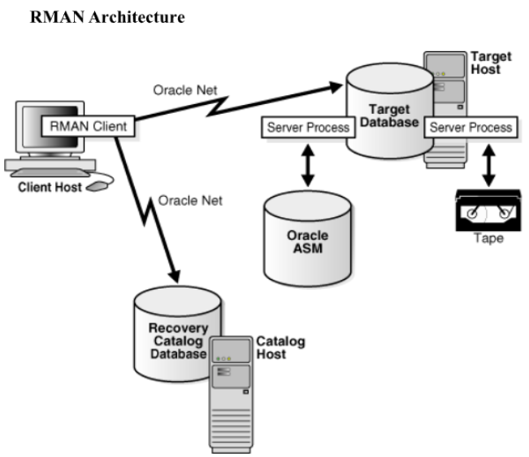

AIM:
To understand the concept of database recovery.
PROCEDURE:
1. Select the system / application.
2. Include database recovery methods.
3. Design the system for database recovery.
RECOVERY:
Recovery is the set of concepts, procedures, and strategies involved
in protecting the database against data loss caused by media failure or
user errors. The purpose of a backup and recovery strategy is to protect
the database and reconstruct lost data.
RECOVERY TECHNIQUES:
RECOVERY MANAGER (RMAN):
RMAN is an Oracle Database utility that integrates with an Oracle
database to perform backup and recovery activities. It maintains a
repository of historical backup metadata in the control file of every
backed-up database and can also maintain a centralized backup repository
called a recovery catalog. RMAN is an Oracle Database feature and does not
require separate installation.
As an alternative, you can use operating system commands such as
Linux's dd for backing up and restoring files, and the
SQL*Plus RECOVER command for media recovery. Although
user-managed backup and recovery are fully supported, RMAN is recommended
for its integration with Oracle Database and simplified administration.

BASIC CONCEPTS OF DATA RECOVERY ADVISOR:
The Data Recovery Advisor tool automatically diagnoses persistent
data failures, presents appropriate repair options, and executes repairs
at the user's request. It improves the manageability and reliability of an
Oracle database and helps reduce recovery time.
USER INTERFACES TO DATA RECOVERY ADVISOR:
Data Recovery Advisor has both command-line and GUI interfaces,
accessible via Oracle Enterprise Manager Database Control and Grid
Control.
The database includes a framework called Health Monitor for running
diagnostic checks. A checker assesses the health of the database or its
components and performs data integrity checks, which can be invoked
reactively or proactively.
Failures, detected through integrity checks, are recorded in the
Automatic Diagnostic Repository (ADR). The Data Recovery Advisor
identifies repair options and validates them before execution. If an
automated repair is chosen, Oracle Database performs the repair, verifies
its success, and closes the failure.
DATA FILE RECOVERY:
Data file recovery repairs a lost or damaged current data file or
control file. It can also recover changes lost when a tablespace went
offline without the OFFLINE NORMAL option.
• Complete recovery
• Incomplete recovery
COMPLETE RECOVERY:
Complete recovery applies all redo changes contained in the archived
and online logs to a backup. It is performed after a media failure damages
data files or the control file, and can be applied to the database,
tablespace, or data file.
INCOMPLETE RECOVERY:
Incomplete recovery, or point-in-time recovery, results in a
noncurrent version of the database. This recovery does not apply all redo
generated after the restored backup. Typically performed to undo user
errors when Flashback Database is not an option, it requires restoring all
data files from backups and opening the database with the
RESETLOGS option upon completion.